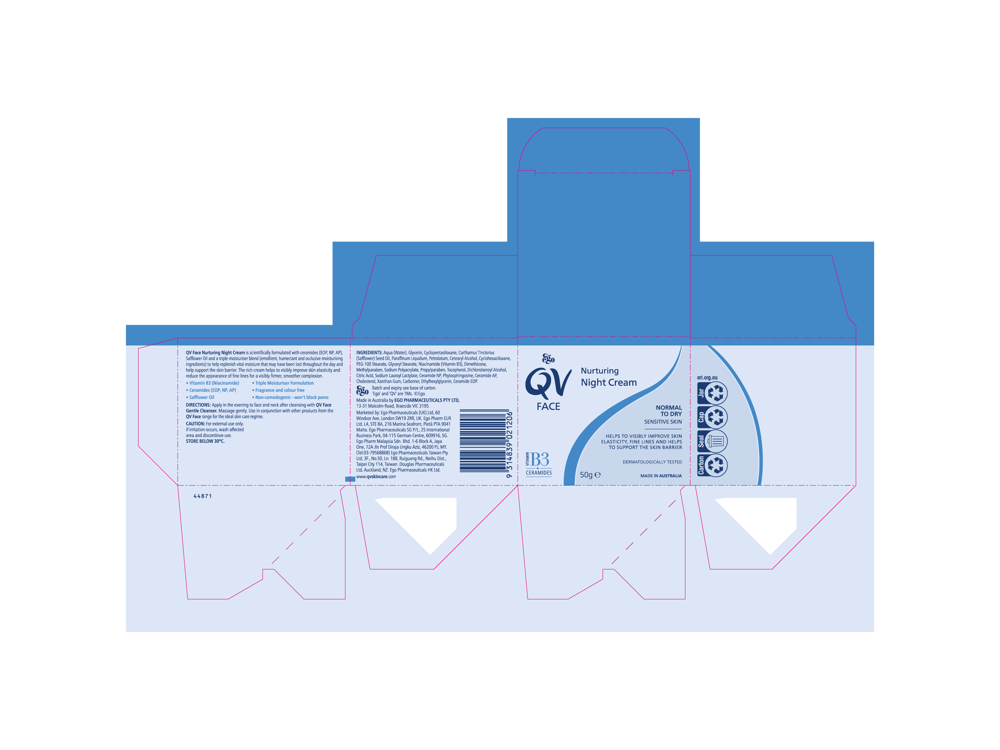

Cut · crease · perf · drill · glue area · label cut-to vs cut-through
Each line type is typically kept on its own spot-colour / non-printing layer so RIP and cutting software can separate tool paths.
| Line style | Type | What it means |
|---|---|---|
| Cut | Full separation through the material. Own spot colour, commonly named CutContour or Dieline, set to overprint so it never knocks out or prints. |
|
| Crease / score | No material removed - a rule or matrix impression that lets board fold cleanly along the line. Thicker board often needs a counter-score on the reverse to stop the outer face cracking. | |
| Perforation | Alternating cut and tie (bridge) segments, defined by a cut:tie ratio (e.g. 2mm cut / 1mm tie). Longer ties = harder to tear but stronger; shorter ties = easier tear-off but risk of premature separation in transit. | |
| Drill / punch | Round holes at specified diameter and X/Y position, for hang tabs, binding, or fitments. Kept as its own layer since it often runs on a different tool/bit than the cutting blade. | |
| Glue area | Not a cutting element - a masked zone marking where adhesive is applied, usually on its own non-printing layer. Must be kept clear of ink, varnish, and coatings, since most coatings act as release agents and stop the glue bonding, causing seam failure on the finished carton. |
Blade depth is the deciding factor - how deep into the material stack the cut travels.
A production-ready file is a stack of layers, not one flat image. Toggle through what each layer contributes, then see them combined as the composite that goes to plate and to the cutter.

1-original-artwork.jpg through 6-composite.jpg (same folder as this HTML file) with your own exports, keeping the filenames - or edit the src values in the tab data below to point at whatever files you use.